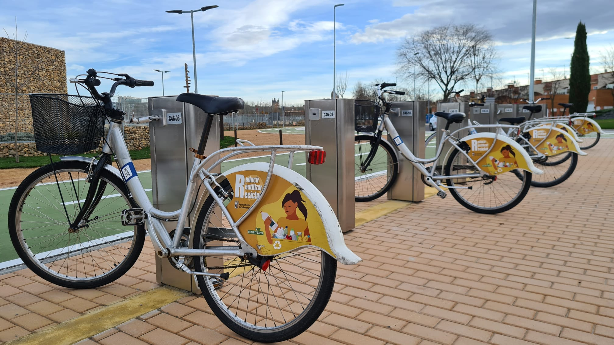
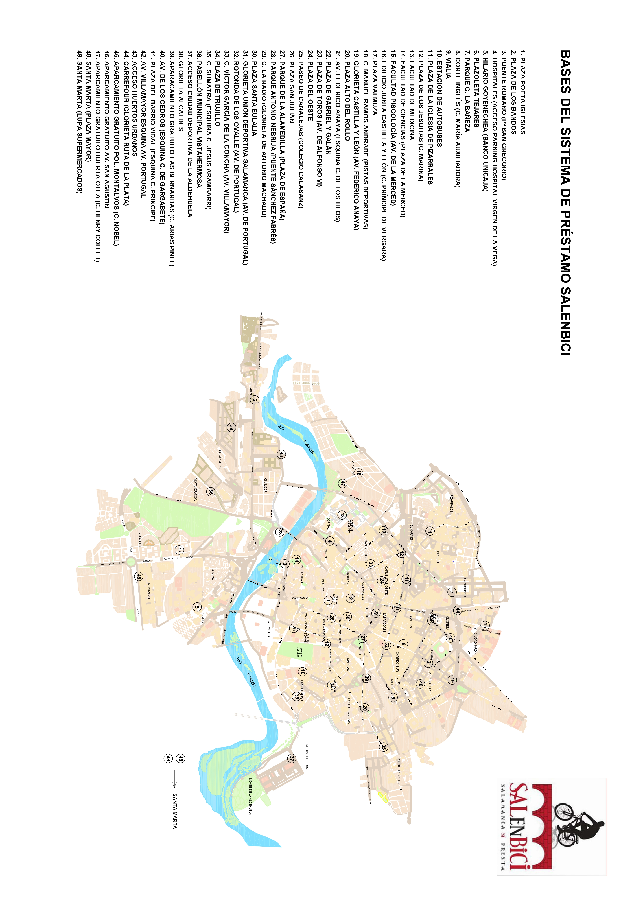

SALENBICI: Sistema de Préstamo de Bicicletas en Salamanca

Salamanca ofrece a ciudadanos y visitantes el sistema de préstamo de bicicletas públicas conocido como SALENBICI. Gracias a una extensa red de carriles bici que atraviesa la ciudad y su orografía predominantemente llana, la bicicleta se presenta como una de las alternativas de movilidad más rápidas, ecológicas y saludables para los desplazamientos diarios.
Horarios de Servicio y Tarifa Anual
El sistema se encuentra operativo durante la mayor parte del día, adaptándose a las jornadas laborales y estudiantiles:
- De Lunes a Viernes: De 7:00 a 23:00 horas.
- Sábados, Domingos y Festivos: De 10:00 a 23:00 horas.
El coste del abono estándar para utilizar la red de bicicletas públicas es de 13 euros al año.
Uso Gratuito para Titulares del Abono Bus-Ciudad
Si eres titular de la Tarjeta Bus-Ciudad en su modalidad Abono Mensual (Ojo: no es válido para la tarjeta Abono Joven), tienes derecho al uso gratuito del sistema SALENBICI. La gratuidad se mantendrá únicamente durante la vigencia del abono mensual de autobús.
¿Cómo solicitar este beneficio?
- Paso 1: Es necesario darse de alta la primera vez en las dependencias municipales de Medio Ambiente de la Calle Iscar Peyra Nº 26, 5ª Planta.
- Paso 2: Debes presentar el recibo de pago de recarga en efectivo emitido por Salamanca de Transportes, tu Tarjeta Personal Bus-Ciudad (Abono Mensual) y rellenar el documento de alta.
- Paso 3: Se te hará entrega de una tarjeta de usuario de SALENBICI. Las siguientes veces que recargues tu tarjeta de autobús, la de SALENBICI se actualizará automáticamente.
Mapa de Bases SALENBICI
Localiza la estación de anclaje de bicicletas más cercana a tu domicilio o lugar de estudio/trabajo.

Información Oficial y Contacto
- Área de Medio Ambiente: Calle Iscar Peyra Nº 26, 5ª Planta.
- Teléfono: 923 279 137
- Correo Electrónico: medioambiente@aytosalamanca.es
- Página Web Oficial: www.salamancasalenbici.com